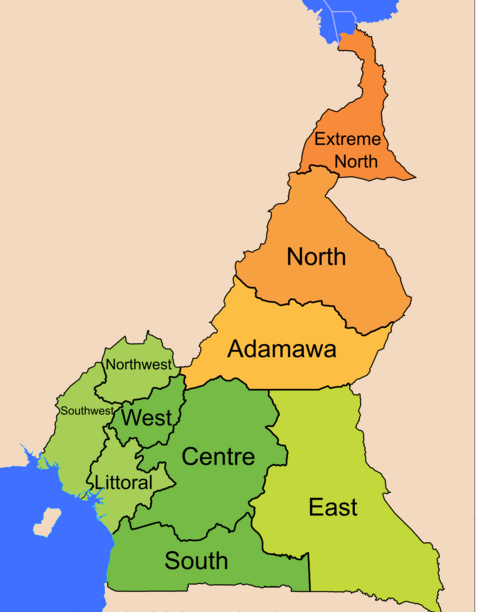

Cameroon, officially the Republic of Cameroon, is a country in West Africa. It is bordered by Nigeria to the west; Chad to the northeast; the Central African Republic to the east; and Equatorial Guinea, Gabon, and the Republic of the Congo to the south. Cameroon's coastline lies on the Bight of Bonny, part of the Gulf of Guinea and the Atlantic Ocean.
Cameroon is home to more than 200 different linguistic groups. French and English are the official languages. The country is often referred to as "Africa in miniature" for its geological and cultural diversity. Natural features include beaches, deserts, mountains, rainforests, and savannas. The highest point at almost 4,100 metres (13,500 ft) is Mount Cameroon in the Southwest Region of the country, and the largest cities in population-terms are Douala on the Wouri river, its economical capital and main seaport, Yaoundé, its political capital, and Garoua. After independence, the newly united nation joined the Commonwealth of Nations, although the vast majority of its territories had previously been a German colony and, after World War I, a French mandate. The country is well known for its native styles of music, particularly makossa and bikutsi, and for its successful national football team.
The territory of present-day Cameroon was first settled during the Neolithic Era. The longest continuous inhabitants are groups such as the Baka (Pygmies). From here, Bantu migrations into eastern, southern, and central Africa are believed to have originated about 2,000 years ago. The Sao culture arose around Lake Chad c. AD 500 and gave way to the Kanem and its successor state, the Bornu Empire. Kingdoms, fondoms, and chiefdoms arose in the west. Portuguese sailors reached the coast in 1472. They noted an abundance of the ghost shrimp Lepidophthalmus turneranus in the Wouri River and named it Rio dos Camarões (Shrimp River), which became Cameroon in English. Over the following few centuries, European interests regularised trade with the coastal peoples, and Christian missionaries pushed inland. In the early 19th century, Modibo Adama led Fulani soldiers on a jihad in the north against non-Muslim and partially Muslim peoples and established the Adamawa Emirate. Settled peoples who fled the Fulani caused a major redistribution of population. The northern part of Cameroon was an important part of the Arab slave trade network. The Bamum tribe have a writing system, known as Bamum script or Shu Mom. The script was given to them by Sultan Ibrahim Njoya in 1896, and is taught in Cameroon by the Bamum Scripts and Archives Project. The German Empire claimed the territory as the colony of Kamerun in 1884 and began a steady push inland. They initiated projects to improve the colony's infrastructure, relying on a harsh system of forced labour, which was much criticised by the other colonial powers. With the defeat of Germany in World War I, Kamerun became a League of Nations mandate territory and was split into French Cameroun and British Cameroons in 1919. France integrated the economy of Cameroun with that of France and improved the infrastructure with capital investments, skilled workers, and modified the system of forced labour. The British administered their territory from neighbouring Nigeria. Natives complained that this made them a neglected "colony of a colony". Nigerian migrant workers flocked to Southern Cameroons, ending forced labour altogether but angering the local natives, who felt swamped. The League of Nations mandates were converted into United Nations Trusteeships in 1946, and the question of independence became a pressing issue in French Cameroun. France outlawed the most radical political party, the Union des Populations du Cameroun (UPC), on 13 July 1955. This prompted a long guerrilla war and the assassination of the party's leader, Ruben Um Nyobé. In the more peaceful British Cameroons, the question was whether to reunify with French Cameroun or join Nigeria.
At 475,442 square kilometres (183,569 sq mi), Cameroon is the world's 53rd-largest country. It is slightly larger than the nation of Sweden and comparable in size to Papua New Guinea. The country is located in Central and West Africa on the Bight of Bonny, part of the Gulf of Guinea and the Atlantic Ocean. Cameroon lies between latitudes 1° and 13°N, and longitudes 8° and 17°E. Tourist literature describes Cameroon as "Africa in miniature" because it exhibits all major climates and vegetation of the continent: coast, desert, mountains, rainforest, and savanna. The country's neighbours are Nigeria to the west; Chad to the northeast; the Central African Republic to the east; and Equatorial Guinea, Gabon and the Republic of the Congo to the south. Elephants in Waza National Park. Cameroon is divided into five major geographic zones distinguished by dominant physical, climatic, and vegetative features. The coastal plain extends 15 to 150 kilometres (9 to 93 mi) inland from the Gulf of Guinea and has an average elevation of 90 metres (295 ft). Exceedingly hot and humid with a short dry season, this belt is densely forested and includes some of the wettest places on earth, part of the Cross-Sanaga-Bioko coastal forests. The South Cameroon Plateau rises from the coastal plain to an average elevation of 650 metres (2,133 ft). Equatorial rainforest dominates this region, although its alternation between wet and dry seasons makes it is less humid than the coast. This area is part of the Atlantic Equatorial coastal forests ecoregion. Countryside near Ngaoundal in Cameroon's Adamawa Region. An irregular chain of mountains, hills, and plateaus known as the Cameroon range extends from Mount Cameroon on the coast—Cameroon's highest point at 4,095 metres (13,435 ft)—almost to Lake Chad at Cameroon's northern border at 13°05'N. This region has a mild climate, particularly on the Western High Plateau, although rainfall is high. Its soils are among Cameroon's most fertile, especially around volcanic Mount Cameroon. Volcanism here has created crater lakes. On 21 August 1986, one of these, Lake Nyos, belched carbon dioxide and killed between 1,700 and 2,000 people. This area has been delineated by the World Wildlife Fund as the Cameroonian Highlands forests ecoregion. The southern plateau rises northward to the grassy, rugged Adamawa Plateau. This feature stretches from the western mountain area and forms a barrier between the country's north and south. Its average elevation is 1,100 metres (3,609 ft), and its average temperature ranges from 22 °C (71.6 °F) to 25 °C (77 °F) with high rainfall between April and October peaking in July and August. The northern lowland region extends from the edge of the Adamawa to Lake Chad with an average elevation of 300 to 350 metres (984 to 1,148 ft). Its characteristic vegetation is savanna scrub and grass. This is an arid region with sparse rainfall and high median temperatures. Cameroon has four patterns of drainage. In the south, the principal rivers are the Ntem, Nyong, Sanaga, and Wouri. These flow southwestward or westward directly into the Gulf of Guinea. The Dja and Kadéï drain southeastward into the Congo River. In northern Cameroon, the Bénoué River runs north and west and empties into the Niger. The Logone flows northward into Lake Chad, which Cameroon shares with three neighbouring countries.
The European languages introduced during colonialism have created a linguistic divide between the population who live in the Northwest and Southwest regions and the French-speaking remainder of the country. Both English and French are official languages, although French is by far the most understood language (80+%). German, the language of the original colonisers, has long since been displaced by French and English. Cameroonian Pidgin English is the lingua franca in the formerly British-administered territories. A mixture of English, French, and Pidgin called FrancAnglais has been gaining popularity in urban centres since the mid-1970s.
Cameroon has a high level of religious freedom and diversity. The predominant faith is Christianity, practiced by about two-thirds of the population, while Islam is a significant minority faith, adhered to by about one-fifth. In addition, traditional faiths are practiced by many. Muslims are most concentrated in the north, while Christians are concentrated primarily in the southern and western regions, but practitioners of both faiths can be found throughout the country. Large cities have significant populations of both groups. Muslims in Cameroon are divided into Sunnis (including Wahhabis), Shias, Ahmadis, Sufis, and non-denominational Muslims. People from the North-West and South-West provinces are largely Protestant, and the French-speaking regions of the southern and western regions are largely Catholic. Southern ethnic groups predominantly follow Christian or traditional African animist beliefs, or a syncretic combination of the two. People widely believe in witchcraft, and the government outlaws such practices. Suspected witches are often subject to mob violence. The Islamist jihadist group Boko Haram has been reported as operating in North Cameroon. In the northern regions, the locally dominant Fulani ethnic group is mostly Muslim, but the overall population is fairly evenly divided among Muslims, Christians, and followers of indigenous religious beliefs (called Kirdi ("pagan") by the Fulani). The Bamum ethnic group of the West Region is largely Muslim. Native traditional religions are practiced in rural areas throughout the country but rarely are practiced publicly in cities, in part because many indigenous religious groups are intrinsically local in character.
The population total in Cameroon was 20,030,362 in 2011. The life expectancy is 53.69 years (52.89 years for males and 54.52 years for females). Cameroon's population is almost evenly divided between urban and rural dwellers. Population density is highest in the large urban centres, the western highlands, and the northeastern plain. Douala, Yaoundé, and Garoua are the largest cities. In contrast, the Adamawa Plateau, southeastern Bénoué depression, and most of the South Cameroon Plateau are sparsely populated. According to the Cameroon government website, the fertility rate was 5.0 in 2004. People from the overpopulated western highlands and the underdeveloped north are moving to the coastal plantation zone and urban centres for employment. Smaller movements are occurring as workers seek employment in lumber mills and plantations in the south and east. Although the national sex ratio is relatively even, these out-migrants are primarily males, which leads to unbalanced ratios in some regions. Both monogamous and polygamous marriage are practiced, and the average Cameroonian family is large and extended. In the north, women tend to the home, and men herd cattle or work as farmers. In the south, women grow the family's food, and men provide meat and grow cash crops. Like most societies, Cameroonian society is male-dominated, and violence and discrimination against women is common. Estimates identify anywhere from 230 to 282 different folks and linguistic groups in Cameroon. The Adamawa Plateau broadly bisects these into northern and southern divisions. The northern peoples are Sudanese groups, who live in the central highlands and the northern lowlands, and the Fulani, who are spread throughout northern Cameroon. A small number of Shuwa Arabs live near Lake Chad. Southern Cameroon is inhabited by speakers of Bantu and Semi-Bantu languages. Bantu-speaking groups inhabit the coastal and equatorial zones, while speakers of Semi-Bantu languages live in the Western grassfields. Some 5,000 Gyele and Baka Pygmy peoples roam the southeastern and coastal rainforests or live in small, roadside settlements. Nigerians make up the largest group of foreign nationals
Music and dance are an integral part of Cameroonian ceremonies, festivals, social gatherings, and storytelling. Traditional dances are highly choreographed and separate men and women or forbid participation by one sex altogether. The goals of dances range from pure entertainment to religious devotion. Traditionally, music is transmitted orally. In a typical performance, a chorus of singers echoes a soloist. Musical accompaniment may be as simple as clapping hands and stomping feet, but traditional instruments include bells worn by dancers, clappers, drums and talking drums, flutes, horns, rattles, scrapers, stringed instruments, whistles, and xylophones; the exact combination varies with ethnic group and region. Some performers sing complete songs by themselves, accompanied by a harplike instrument. Popular music styles include ambasse bey of the coast, assiko of the Bassa, mangambeu of the Bangangte, and tsamassi of the Bamileke. Nigerian music has influenced Anglophone Cameroonian performers, and Prince Nico Mbarga's highlife hit "Sweet Mother" is the top-selling African record in history. The two most popular styles of music are makossa and bikutsi. Makossa developed in Douala and mixes folk music, highlife, soul, and Congo music. Performers such as Manu Dibango, Francis Bebey, Moni Bilé, and Petit-Pays popularised the style worldwide in the 1970s and 1980s. Bikutsi originated as war music among the Ewondo. Artists such as Anne-Marie Nzié developed it into a popular dance music beginning in the 1940s, and performers such as Mama Ohandja and Les Têtes Brulées popularised it internationally during the 1960s, 1970s, and 1980s.
Traditional arts and crafts are practiced throughout the country for commercial, decorative, and religious purposes. Woodcarvings and sculptures are especially common. The high-quality clay of the western highlands is suitable for pottery and ceramics. Other crafts include basket weaving, beadworking, brass and bronze working, calabash carving and painting, embroidery, and leather working. Traditional housing styles make use of locally available materials and vary from temporary wood-and-leaf shelters of nomadic Mbororo to the rectangular mud-and-thatch homes of southern peoples. Dwellings made from materials such as cement and tin are increasingly common. Contemporary art is mainly promoted by independent cultural organizations (Doual'art, Africréa) and artist-run initiatives (Art Wash, Atelier Viking, ArtBakery).